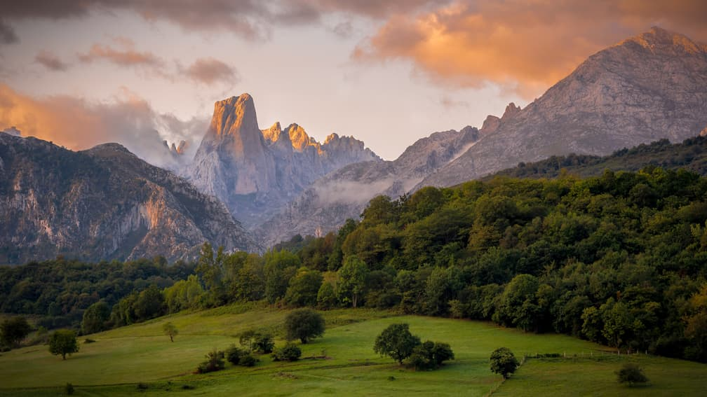
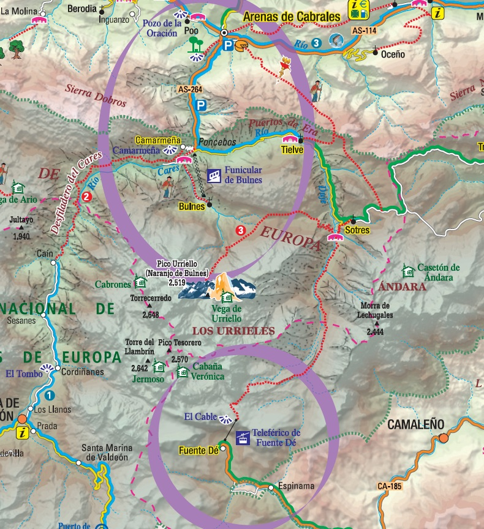
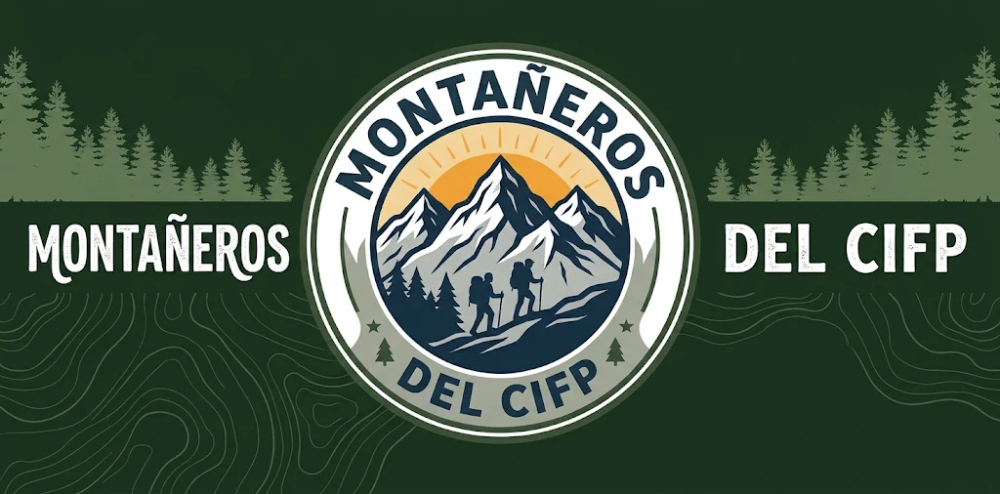
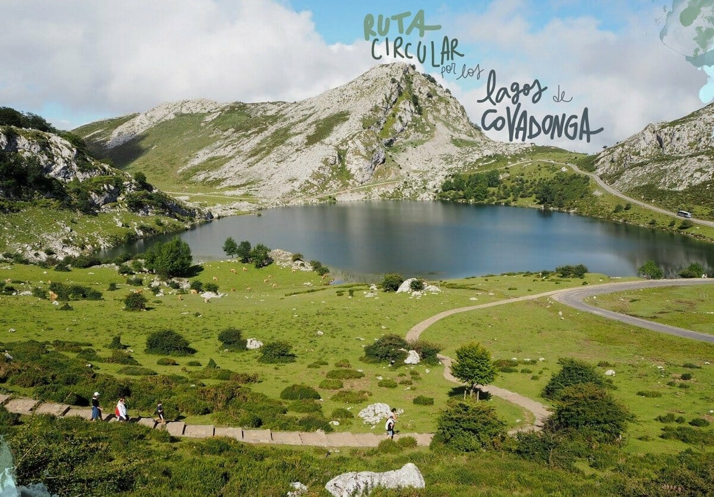
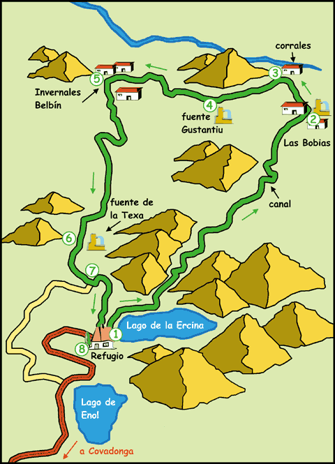
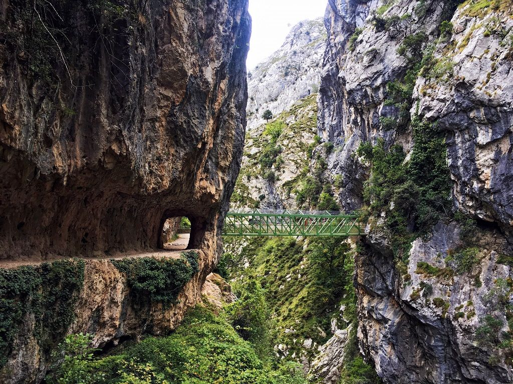
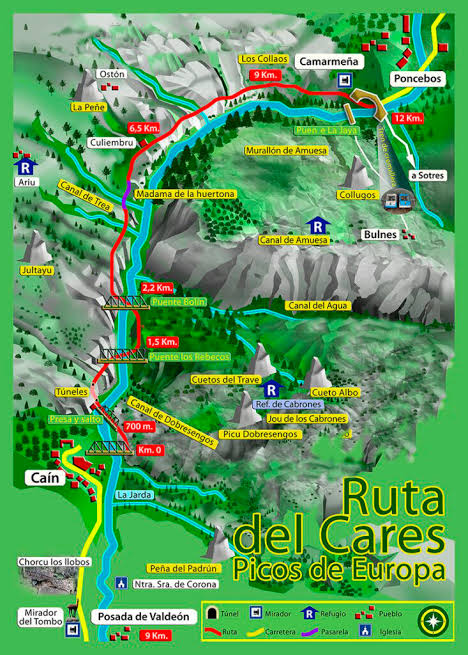

Naranjo de Bulnes
Subida clásica desde Pandébano hasta la gran pared caliza.
Dificultad: Alta
Distancia: 14 km
Duración: 7 horas

Rutas de montaña por Asturias
Somos un pequeño club de amigos que organiza salidas a la montaña todos los fines de semana. Desde paseos tranquilos hasta rutas largas por los Picos de Europa.

Los Picos de Europa, nuestro lugar favorito.
Estas son tres de las rutas que más repetimos durante el año.


Subida clásica desde Pandébano hasta la gran pared caliza.


Ruta circular que pasa por el lago Enol y el lago Ercina.


Camino excavado en la roca entre Poncebos y Caín.
Vídeo de una salida de primavera por los Picos de Europa.